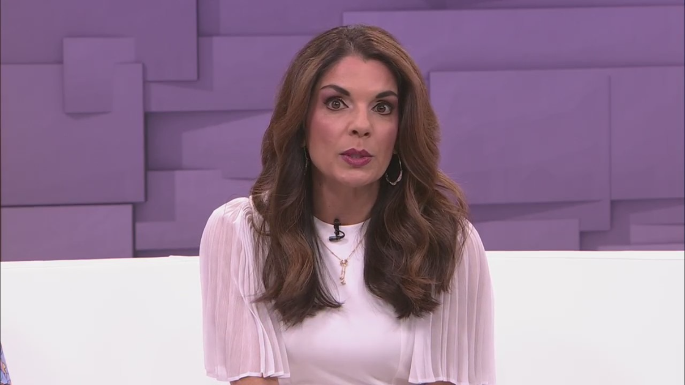

Safety First: A Parenting Guide

As parents, the safety of our children is always our top priority. From the moment they were born, we make sure that every aspect of their environment is safe and secure. But no matter how careful we are, accidents can still happen. That's why it's crucial to be aware of the potential dangers and take the necessary precautions to ensure our child's safety.
An interesting story
One day, I was out grocery shopping with my two-year-old daughter. While I was busy checking the labels, I suddenly heard a loud scream and turned around to find my daughter on the floor crying. She had wandered off and tripped over a carton of spilled milk. Luckily, she only sustained minor bruises, but it was a wake-up call for me to always keep a watchful eye on my child.
Quantifiable examples
- Every year, around 2,500 children in the US die from unintentional injuries, with falls, burns, and drowning being the leading causes.
- In 2018, there were 173,704 cases of non-fatal injuries among children under five years of age in the US.
- Around 40% of child fatalities in car crashes could have been prevented if they were properly restrained in car seats or booster seats.
An eye-catching title
Safety First: Protecting Your Child From Harm
Three key points to consider
- Stay vigilant - Always keep a watchful eye on your child, especially in public places where there are potential hazards. Make sure you know where they are at all times and don't let them wander off.
- Take preventative measures - Identify potential hazards in your home and take the necessary steps to minimize the risk of accidents. This could include installing safety gates, child-proofing electrical outlets, and locking up hazardous substances.
- Invest in quality safety gear - When it comes to car seats, helmets, and other safety gear, don't skimp on quality. Make sure you choose products that meet safety standards and are appropriate for your child's age and size.
Personal anecdotes and case studies
My friend's toddler had a habit of climbing on countertops, which posed a significant risk of falling and injuring himself. To prevent this, my friend installed locks on all her cabinets and drawers and made sure all hazardous items were securely stored away. This not only kept her child safe but also gave her peace of mind.
Practical tips for parents
- Teach your child about safety rules and guidelines from an early age.
- Always use proper restraints in cars, such as car seats and booster seats.
- Keep hot liquids and foods out of reach of children and use caution when using hot appliances.
- Keep a first-aid kit on hand for emergencies.
- Regularly check and replace damaged or worn-out safety gear.
References and hashtags
References:
Hashtags: #parentingtips #childsafety #injuryfree #safekids #familyhealth
Category: Parenting
Curated by Team Akash.Mittal.Blog
Share on Twitter Share on LinkedIn